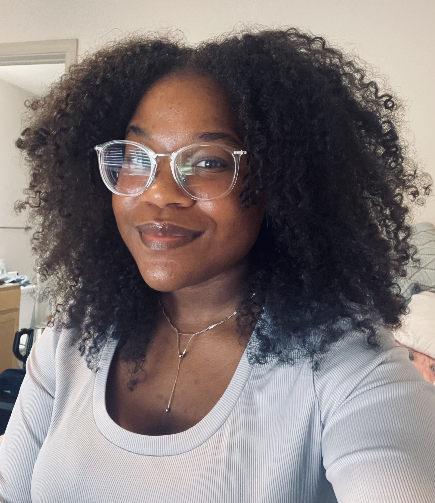

Education
- Bachelor of Fine Arts in Digital Art from Louisiana State University, Class of 2023.
Skills
- Has knowledge on how to make a website inclusive for all users (hard of hearing, blind, etc.) Is great to collaborate with; responds well to criticism. Is fluent in Mandarin, English and German. While my primary focus is UI I can also navigate and aid in UX. Proficient with Adobe Suite and 3D modeling software such as Maya.